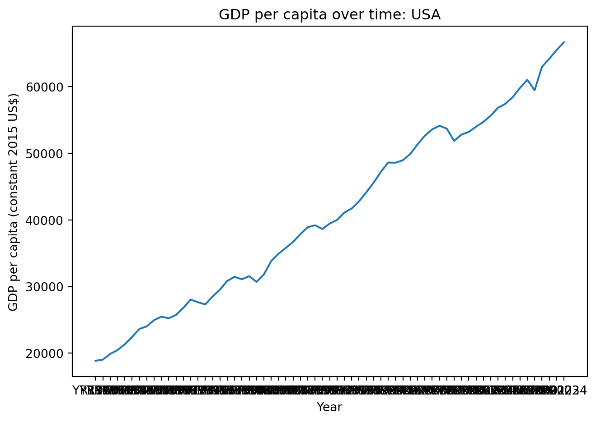

The dataset used in this project is the World Development Indicators (WDI) from the World Bank, a comprehensive collection of more than 1,600 indicators across 200+ countries from 1960–2023.
Dataset Context and Importance
The WDI dataset enables cross‑country comparisons and long‑run development analysis.
Data Import
# Use below line of code to install the dataset package# !pip install wbgapiimport wbgapi as wbgdp_pc = wb.data.DataFrame('NY.GDP.PCAP.KD')gdp_pc.head()
YR1960
YR1961
YR1962
YR1963
YR1964
YR1965
YR1966
YR1967
YR1968
YR1969
...
YR2015
YR2016
YR2017
YR2018
YR2019
YR2020
YR2021
YR2022
YR2023
YR2024
economy
ABW
NaN
NaN
NaN
NaN
NaN
NaN
NaN
NaN
NaN
NaN
...
27458.225331
27719.500731
29671.135829
30334.116222
29576.809715
21947.995330
27469.005622
29917.128029
31178.473679
NaN
AFE
1172.243576
1147.240329
1204.703044
1238.367092
1261.023946
1289.344084
1314.066248
1345.846757
1361.807045
1390.387047
...
1479.615260
1472.699230
1472.971152
1471.438317
1463.437891
1383.724119
1409.040699
1421.797169
1412.625384
1416.250369
AFG
NaN
NaN
NaN
NaN
NaN
NaN
NaN
NaN
NaN
NaN
...
565.569730
563.872337
562.769574
553.125152
557.861533
527.834554
408.625855
377.665627
378.066303
NaN
AFW
1122.268548
1119.450062
1136.671637
1190.566304
1227.326470
1249.709471
1203.426396
1070.979475
1062.926658
1195.395480
...
1860.727694
1815.168693
1808.716493
1814.688734
1829.070620
1768.313565
1796.602085
1824.953296
1841.758346
1873.200724
AGO
NaN
NaN
NaN
NaN
NaN
NaN
NaN
NaN
NaN
NaN
...
3213.902611
3020.983328
2911.600842
2775.746423
2664.438510
2433.376373
2385.448818
2382.022640
2334.661043
2364.846591
5 rows × 65 columns
Data Analysis
Descriptive Statistics
gdp_pc.describe()
YR1960
YR1961
YR1962
YR1963
YR1964
YR1965
YR1966
YR1967
YR1968
YR1969
...
YR2015
YR2016
YR2017
YR2018
YR2019
YR2020
YR2021
YR2022
YR2023
YR2024
count
144.000000
151.000000
151.000000
151.000000
151.000000
153.000000
157.000000
158.000000
158.000000
158.000000
...
259.000000
256.000000
256.000000
256.000000
255.000000
255.000000
255.000000
255.000000
249.000000
232.000000
mean
4715.434088
4708.111660
4863.429724
5016.823772
5275.360360
5579.516804
5687.832536
5814.749407
6071.684081
6364.755835
...
15670.547829
15302.700223
15554.401081
15888.598111
16177.573832
14977.576342
16009.447061
16567.226858
16312.202309
15039.404706
std
6879.796920
7018.010467
7210.103926
7384.188094
7807.908893
8112.034558
8401.734023
8710.117965
8969.850734
9329.838167
...
23570.955343
21968.987505
22070.686216
22547.989651
23034.606466
21211.387699
23229.400990
24187.666741
24414.377567
20138.119763
min
129.772040
127.564281
129.887941
144.000793
132.522440
143.417218
133.398255
122.678901
134.388137
135.702756
...
280.966831
274.513363
269.476890
265.672394
261.750180
255.078218
255.917951
253.691642
253.445651
255.598396
25%
886.804076
824.513367
864.357764
870.605096
916.841782
935.954213
958.850657
934.839171
952.878878
995.392649
...
1996.657596
2051.553461
2001.264256
2049.754152
2068.087866
1997.500127
2130.369905
2136.975118
2236.805080
2180.083936
50%
1530.841776
1575.524061
1544.730841
1624.518695
1640.504494
1721.809888
1705.990591
1700.465461
1759.067308
1878.457912
...
6141.203947
6068.626927
6232.844768
6358.219481
6439.963598
6109.196081
6457.730538
6527.482079
6449.230288
6620.675369
75%
5310.533366
4747.751856
4838.666743
4951.173778
5921.966249
6547.982998
5791.113279
6118.271917
6683.105659
6919.957118
...
19060.625424
18861.217726
19242.388883
19165.300266
19920.853014
17753.871132
18924.030285
20028.678188
19381.246074
18477.804424
max
39907.263927
42297.964716
43214.515492
44364.466028
45930.292957
46358.450838
51062.408151
56696.152709
56867.577462
57787.656227
...
170437.101188
173120.189785
165781.779122
173041.761058
185582.755690
161262.925884
194674.777609
213937.006284
224582.449752
117661.271727
8 rows × 65 columns
Visualization
import matplotlib.pyplot as pltcountry_code ='USA'gdp_pc_country = gdp_pc.loc[country_code].dropna()plt.figure()plt.plot(gdp_pc_country.index, gdp_pc_country.values)plt.xlabel("Year")plt.ylabel("GDP per capita (constant 2015 US$)")plt.title(f"GDP per capita over time: {country_code}")plt.tight_layout()

Results and Discussion
Write your discussion here.
Conclusion
Write your conclusion here.
References
World Bank. World Development Indicators (WDI). Accessed via wbgapi: https://github.com/tgherzog/wbgapi